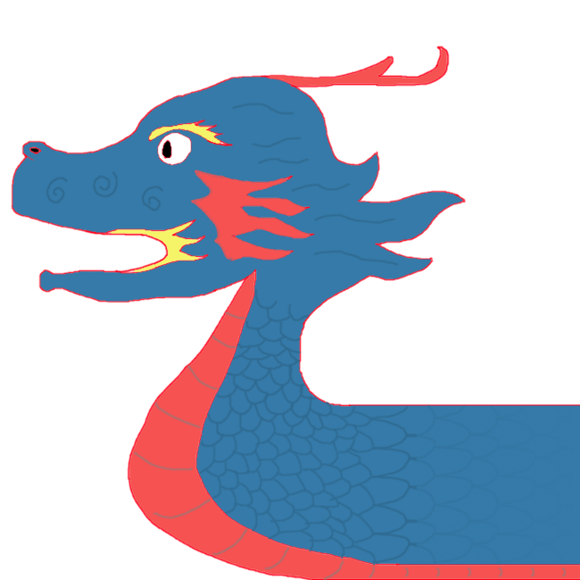
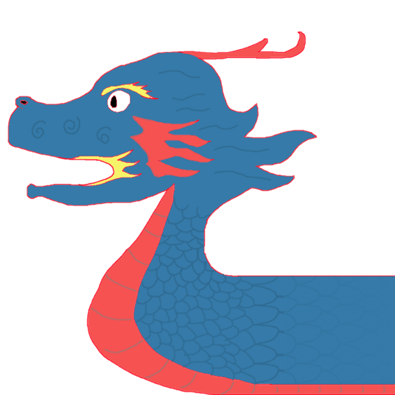

York Dragon Boat Race
ENG1 Team 11 project
|  |

|

|
ENG1 Team 11 project
|  |
|
|
In order to identify possible risks, we first defined our project objectives. Our main goal was to build a boat racing game that would satisfy all the requirements of the customer, be playable and enjoyable. We then reviewed the requirements, including user, functional and nonfunctional requirements, and went through our project plan to determine all possible factors that can affect the quality of the final product.
For documentation purposes we decided to organize possible risks in tabular format. We also divided all risks in three categories: “Project”, “Product” and “Business”. “Project” category is assigned to the risks that might affect our project schedule and progressing speed. “Product” category is for the risks that may potentially affect the quality of the game, for example, any hardware or software issues. As for “Business”, this category is assigned to the risks that may affect the success of our product in the market, in our case - success of using our game for promotional activities organized by The University of York Communications Office.
In addition, we assigned likelihood and severity scores to each risk. For both likelihood and severity measurement we used a scale of “low”, “medium” and “high” which is easy to understand and intuitive.
Potential risks have been identified by the whole project team, as all members of the team were involved. Any potential risk suggested by any member was recorded and analysed. More specific/technical issues have also been assigned to specific team members that are working on related parts of the project. If a new potential risk is found by a member in the future, it will be posted in the Discord dedicated channel, then discussed and added to the table.
| ID | Type | Description | Likelihood | Severity | Mitigation | Owner |
|---|---|---|---|---|---|---|
| R1 | Project | A team member is sick and doesn’t show up at a meeting | Medium | Medium | Assign the task to another member of the team to ensure that it is completed in time | All |
| R2 | Project | Accidentally deleting a file from Google Drive | Low | High | Make sure members keep backup copies on their computers | All |
| R3 | Project | A team member does not contribute to the project | High | High | Make sure all tasks are completed by other team members | All |
| R4 | Project | Miscommunications and lack of clarity, e.g. several members doing the same task, misunderstanding design decisions | Medium | Medium | Every team member must inform others about the parts of the project they are working on, ask for clarification when uncertain about something | All |
| R5 | Project | Team is running out of time | High | High | Meet up more frequently and make sure every team member is involved | All |
| R6 | Project | Conflicts within the team | Low | Medium | Try to resolve a conflict or minimize its effect on the projects | All |
| R7 | Project | Misunderstanding customer requirements | Low | High | Schedule a meeting with the customer and make sure all requirements are understood and met | All |
| R8 | Project | Project schedule is not clearly defined or understood | Low | Medium | Share the schedule, make sure every team member understands the plan and is aware of deadlines. Go through completed and upcoming tasks at weekly meetings | All |
| R9 | Project | Misunderstanding some of the assessment questions | Low | High | Contact the lecturer and make sure all question are understood and answered | All |
| R10 | Business | The customer is not satisfied with the game design/implementation | Low | High | Set up a team meeting and discuss possible changes | Coders |
| R11 | Product | Product doesn’t meet some user, functional or nonfunctional requirements | Low | High | Review the requirements at each stage of the project and make sure all of them are met | All |
| R12 | Product/Business | Product doesn’t meet the customer expectations, e.g game is too complex, too simple or not enjoyable | Low | High | Organize a team meeting and discuss possible changes or improvements | All |
| R13 | Project | Lack of skills/ knowledge of team members | Low | Medium | Team members must learn/improve their skills through taking online courses, reading relevant literature or using any other resources | All |
| R14 | Product | Lack of skills/ knowledge of team members | Low | Medium | Game is not playable on a low spec computer (i.e. dual-core laptop with 4GB of RAM) | Coders |
| R15 | Product | Game is not playable on some platforms | Low | Medium | Set up a team meeting and discuss what adjustments can be made to the game to run on other platforms | Coders |
| R16 | Product | Game mechanics/controls are too complex to understand | Low | Medium | Redesign the tutorial, think of other changes that may help | All |
| R17 | Product | Game logic does not work as expected, e.g. durability doesn’t reduce when colliding with obstacles | Low | High | Members responsible for the implementation must go through | Coders |
| R18 | Product | Game keeps crashing | Low | High | Members responsible for the implementation must go through the code and find the cause | Coders |